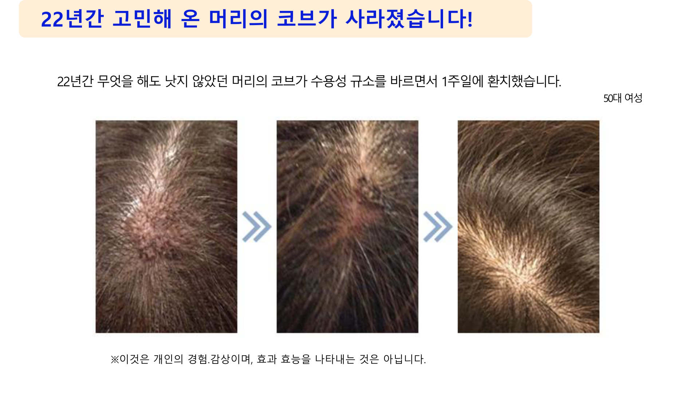
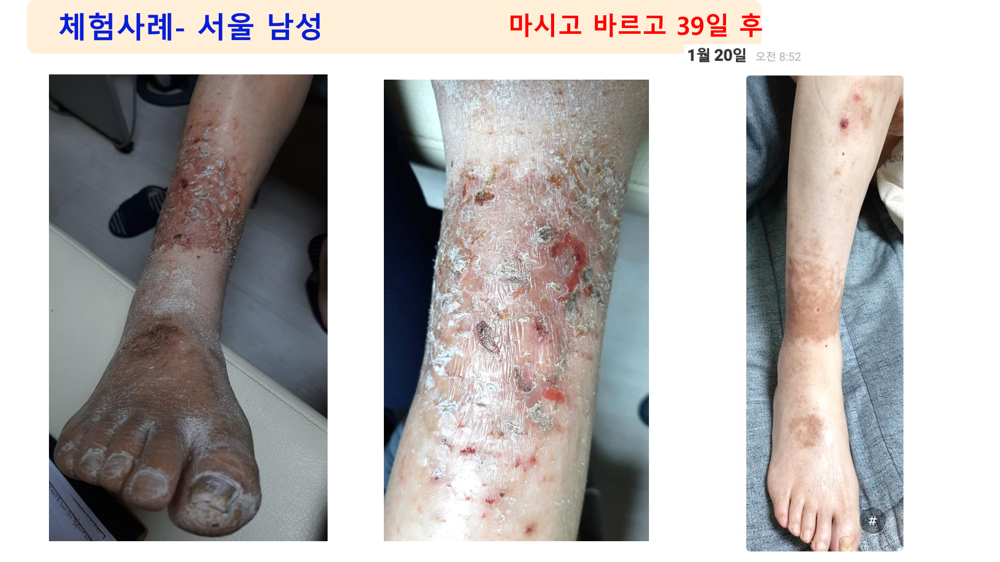
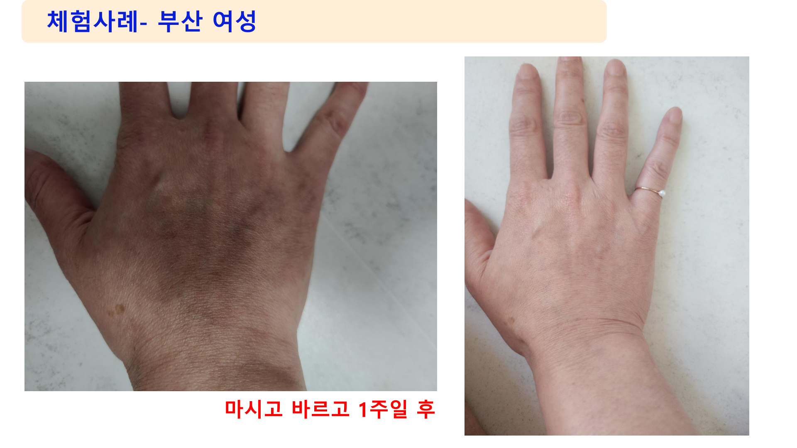
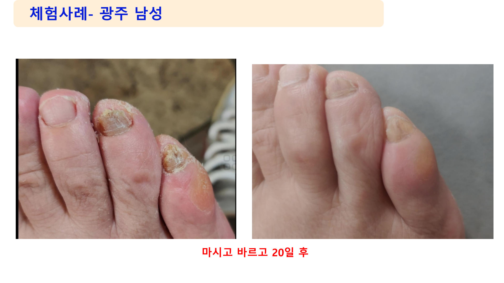
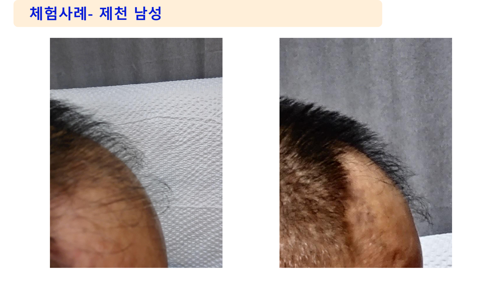
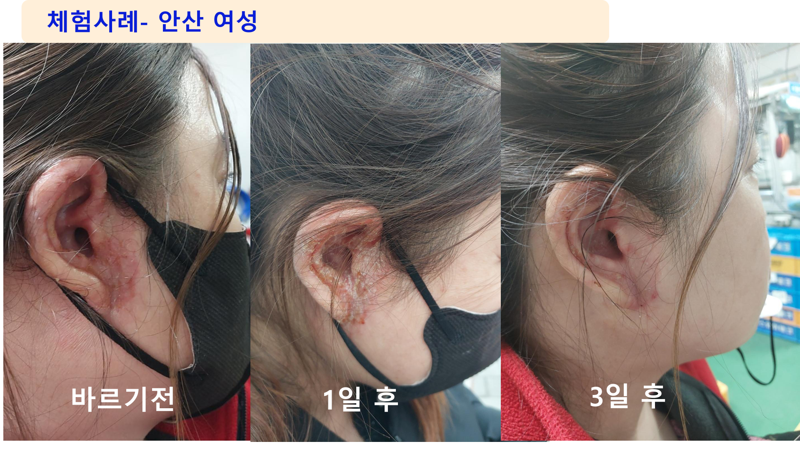
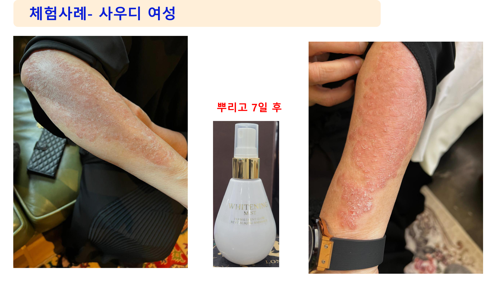
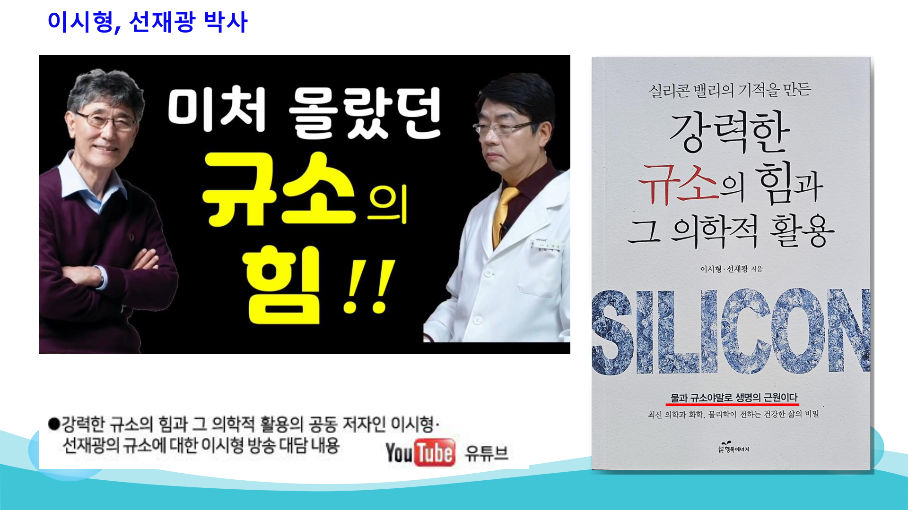

세포를 완벽하게 재생시키는 수용성 규소의 힘.
수많은 박사들이 놀라고 환자들이 사진으로 증명한 실제 사례들입니다.
22년 동안 병원 치료를 포함해 무엇을 해도 낫지 않고 평생을 괴롭혔던 거대한 머리의 코브(혹). 두피에 직접 규소수를 바르기 시작한 지 단 1주일 만에 완전히 사라지는 기적을 경험했습니다.

정수리가 훤히 보일 정도의 심각한 탈모로 오랜 기간 스트레스를 받던 환자. 매일 규소수를 마시며 동시에 두피에 직접 바르고 마사지한 결과, 정확히 39일 후부터 새 머리카락이 돋아나기 시작하는 것을 육안으로 확인했습니다.

독한 연고와 약으로도 고치지 못해 밤마다 피가 나도록 긁어야 했던 지독한 만성 피부 건선. 규소수를 꾸준히 복용하고 환부에 직접 바르자 1주일 만에 가려움증이 멈추고 피부가 눈에 띄게 호전되는 결과를 얻었습니다.

얼굴 전체를 뒤덮은 심각한 피부 트러블. 화장품 대신 규소수 원액을 물에 희석해 매일 마시고 환부에 바른 지 단 20일 만에 열꽃이 가라앉고 피부가 깨끗하게 진정되었습니다.

만성적인 두피 및 피부 트러블로 고통받던 상황에서 규소수를 적극적으로 사용한 결과, 눈에 띄게 환부가 진정되고 새 살이 돋아나는 놀라운 효과를 보았습니다.

얼굴을 뒤덮은 심각한 피부 트러블이 규소수를 스프레이로 뿌린 지 단 3일 만에 말끔하게 진정되며 매끄러운 피부를 되찾았습니다.

해외에서도 뚜렷한 원인을 알 수 없어 고통받던 악성 피부 질환. 최후의 수단으로 규소수 원액을 희석해 환부에 뿌린 지 7일 만에 질환 부위가 떨어져 나가고 원래의 깨끗한 피부로 돌아왔습니다.

※ 이것은 개인의 경험 및 감상이며, 효과·효능을 보장하는 의학적 지표는 아닙니다. 개인의 체질에 따라 명현 현상과 호전 속도는 다를 수 있습니다.

"규소는 강력한 항산화 물질이어서 인체의 노화를 방지하고 상처 입은 인체를 수리, 회복합니다. 또한 뇌 피로 회복에 유익하며 모세혈관, 장의 내막, 뇌, 심장 등 생명과 직결되는 기관에서는 규소가 중요한 작용을 합니다."
"고혈압을 약 없이 극복하고 혈관을 튼튼히 하려면 규소를 섭취하십시오."
"수용성 규소(실리카)는 인류를 구할 물질입니다."
"규소가 인체 내에 축적된 알루미늄을 배출함으로써 뇌의 인지 기능을 향상해 치매의 진행을 늦추거나 예방할 수 있습니다."
"수용성 규소는 활성산소를 무해한 산소로 만들어 체내에서 이용하게 하고, 그 후에도 수많은 생명 유지 임무를 수행합니다."
"수용성 규소는 인체 내 IPS(유도만능 줄기세포)를 활성화하며 소식과 규소로 난치병 극복의 길을 열어갑니다."